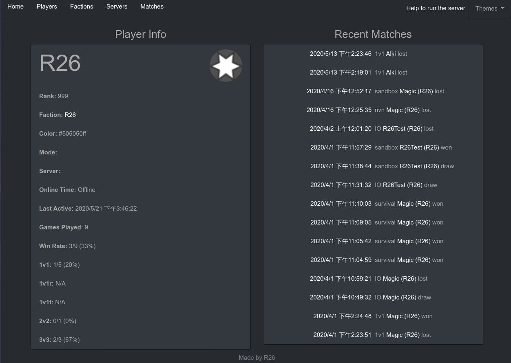

Istrolid 遊戲資訊收集
2020-03-24
Istrolid 這個遊戲我已經玩了有4年了。除了簡單又好玩以外，這遊戲最吸引我的地方就是遊戲本身的可修改性。因為它是用Coffeescript寫的，而且又沒有使用程式碼混淆器，所以使用Electron的除錯台就可以簡簡單單的把自制的外掛加入遊戲。我Gist上大部份都是這遊戲的插件。
這次我做了個遊戲資訊收集的服務。主要收集了每個玩家在線上的時間跟紀錄他們的輸贏。還有一些其它像是公會統計等功能。
後端分成了兩個部份，一個用websocket連結到遊戲主伺服並用SQLAlchemy更新資料庫，另一個用CherryPy提供API跟其他網頁服務。因為兩邊用的是同一個資料庫，所以網頁端在沒流量休息關閉的時候，資料庫裡的遊戲資料還是會一直被更新。
前端則是Bootstrap加JQuery簡單弄，用了Mako來把重複的內容放到一起。主要就是HTML寫排版，再用AJAX取得資料讓JQuery把資料放進去。CSS什麼的就丟給Bootstrap了 XD。
之前對SQL不怎麼熟，只知道怎麼 SELECT * FROM players WHERE name = “Hello"; 這次做這個學了不少東西，像是 GROUP BY, ORDER BY, JOIN ON 等指令。SQL技能升等一級！
整個專案我有放在Github上，可以在這裡看到：http://istrostats.r26.me/
